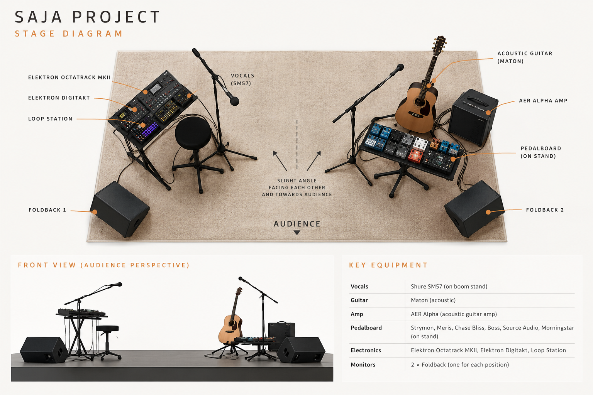

SAJA Project · Live Performance
Stage Requirements.
Equipment and technical requirements for SAJA Project live performances.
Equipment List
| Equipment | Category | Quantity |
|---|---|---|
| Instruments | ||
| Maton Guitar | Acoustic Guitar | 1 |
| Amplification | ||
| AER Alpha | Acoustic Guitar Amplifier | 1 |
| Guitar Pedals & Effects | ||
| Strymon Timeline | Delay | 1 |
| Strymon Cloudburst | Reverb | 1 |
| Meris Mercury7 | Reverb | 1 |
| Chase Bliss MOOD MKII | Granular / Micro-Looping Effects | 1 |
| Chase Bliss Blooper | Looping / Effects | 1 |
| Boss GT-1000CORE | Multi-Effects Processor | 1 |
| Source Audio EQ2 | Equaliser | 1 |
| Morningstar MC8 Pro | MIDI Foot Controller | 1 |
| Electronic Instruments & Looping | ||
| Elektron Octatrack MKII | Performance Sampler / Sequencer | 1 |
| Elektron Digitakt | Sampler / Drum Machine | 1 |
| RC 505 Loop Station | Vocal / Live Looping | 1 |
| Monitoring & Microphones | ||
| Foldback Monitors | Stage Monitoring | 2 |
| Shure SM57 | Dynamic Microphone | 1 |
Stage Layout

Technical Notes
SAJA Project uses a combination of acoustic instruments, live looping, electronic instruments and effects. Equipment configuration may vary depending on the performance format and venue.
Please contact us to discuss stage layout, audio connections, monitoring and any additional technical requirements.